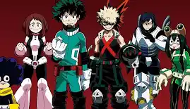
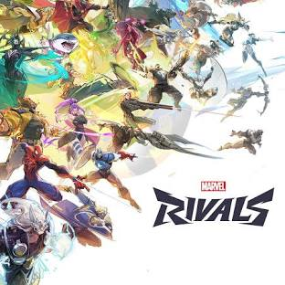

Anime & Video Games
Anime
Anime has been a huge part of my life for as long as I can remember. The first anime I watched was Fairy Tail, followed by many others. Some of the biggest series I’ve watched include Demon Slayer, Naruto, Bleach, and My Hero Academia.
Video Games
When I was younger, I played a lot of hand-me-down consoles, mainly the PlayStation 2. Some of my favorite games were Jak and Daxter, Spyro, Crash Bandicoot, Ratchet & Clank, and various racing games. Later, I got into Pokémon games like Soul Silver, Black, and Black 2. Currently, I play on a PC, and one of my main games is Marvel Rivals.
